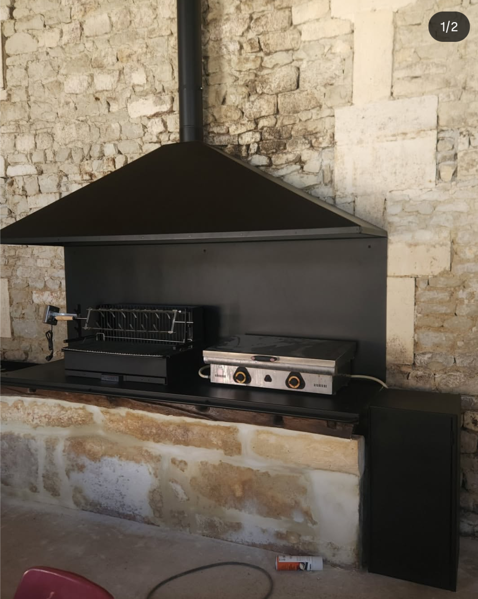

Outillage & bricolage
Produits fiables pour entretien, chantier et interventions du quotidien.
- Selection lisible des references.
- Disponibilite confirmee par telephone.
Nouveau magasin local: quincaillerie et libre-service
Quincaillerie & libre-service
Une page claire et orientee visite magasin: verification produit, informations pratiques et contact direct avant de se deplacer.

L'utilisateur comprend vite ce qu'il trouve en magasin et comment gagner du temps.
Produits fiables pour entretien, chantier et interventions du quotidien.
Fixations, consommables, produits de maintenance et besoins atelier.
Un interlocuteur comptoir pour orienter vers la bonne solution sans detour.

Appelez avant de venir pour confirmer la reference et reduire l'attente.
Voir les infos pratiquesUne methode simple pour transformer une recherche produit en visite utile.
Besoin d'une information produit immediate ? Contactez l'equipe avant votre deplacement pour gagner du temps.